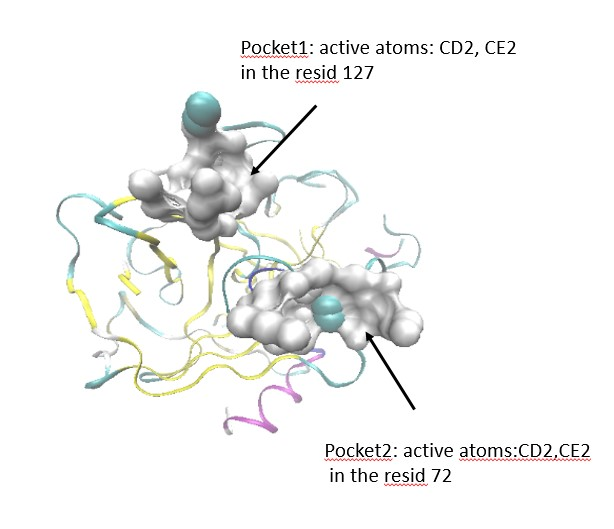
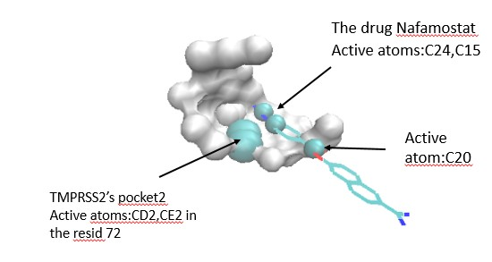
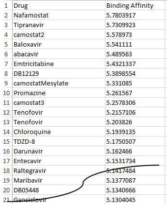

蛋白酶TMPRSS2的量子力学计算
蛋白酶TMPRSS2可协助新冠病毒COVID-19进入宿主细胞。如果TMPRSS2被抑制，则可以抑制整个感染过程，即杀死病毒。
量子力学的计算结果告诉我们，pocket2是活性口袋,具有两个在残基Tyr72的活性原子CD2和CE2 。

然后将活性口袋pocket2,活性原子CD2和CE2和51种小分子药物一起输入3D-CNN程序，获得具有最强结合亲和力的
药物Nafamostat，其亲和力接近5.8，远远大于所有其他药物。 因此，Nafamostat是抑制TMPRSS2的最佳药物.


这个结果与日本东京大学医学科学研究所的工作一致(https://www.u-tokyo.ac.jp/focus/en/articles/z0508_00083.html )。
只是它们是通过实验获得的，而我们仅是通过量子力学计算获得的。